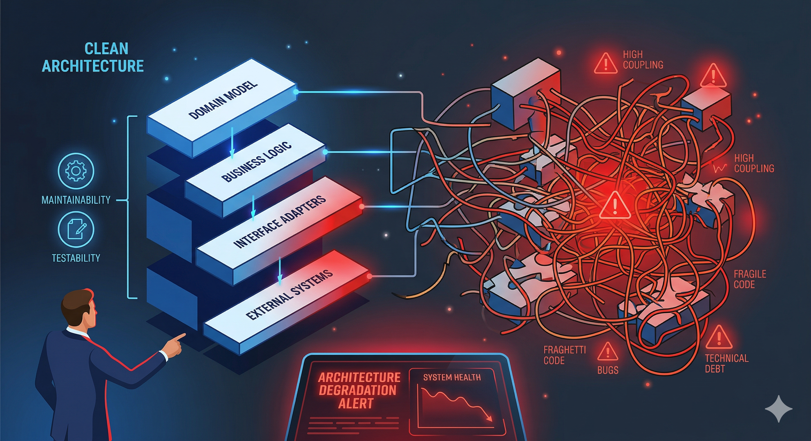
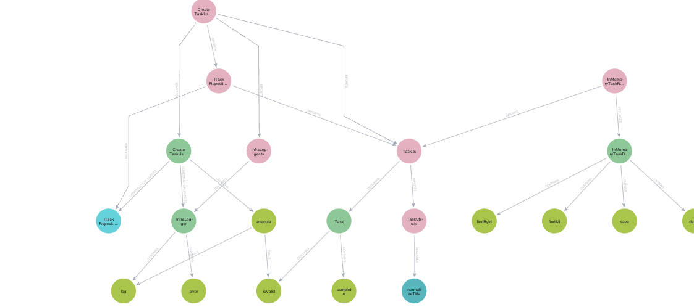
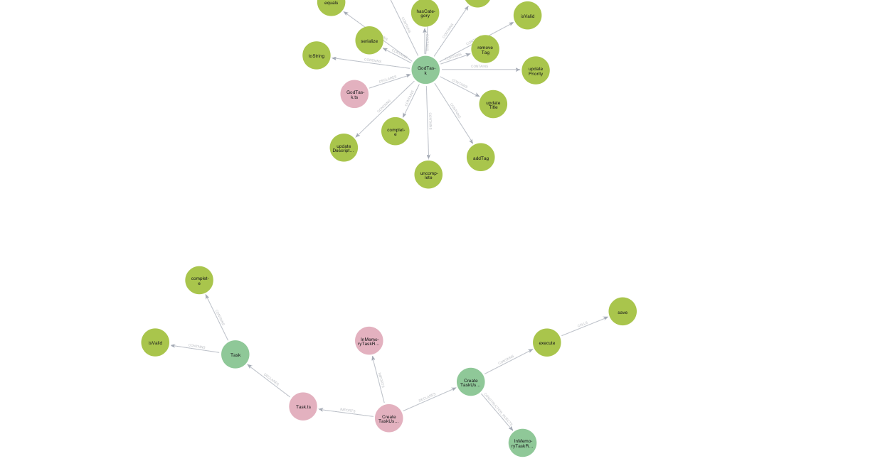

SonarQube measures code quality.
Codecov measures test coverage.
Nothing measures architecture.
| SonarQube | CodeQL | AI Review | 🔥 Arch Firewall | |
|---|---|---|---|---|
| Architecture-aware? | ❌ | ❌ | ❌ | ✅ YAML spec |
| Cross-file analysis? | Partial | ✅ | Per-file | ✅ Full graph |
| Formal specification? | Generic rules | Security queries | None | ✅ Layers, roles, rules |
| Quantitative score? | Code smells | Vuln count | ❌ | ✅ AHS 0–1 |
| Deterministic? | ✅ | ✅ | ❌ | ✅ Symbolic + measurable |
| Detects arch violations? | ❌ | ❌ | Sometimes | ✅ 26 fitness functions |
The Architectural Health Score (AHS) — a deterministic 0–1 score for every codebase, every commit, every PR.
5 real projects. Same architectural spec. One score.
Clean layers, proper interfaces, dependency rules respected. The Firewall scores it 0.85 and lets it merge.

| className | layer | methods | deps | status |
|---|---|---|---|---|
| InMemoryTaskRepository | infrastructure | 4 | 0 | ✅ PASS |
| Task | domain | 2 | 0 | ✅ PASS |
| InfraLogger | infrastructure | 2 | 0 | ✅ PASS |
| CreateTaskUseCase | application | 1 | 2 | ✅ PASS |
God class with 15 methods. Circular imports. Domain importing Express. Database client in a controller. AHS: 0.33 — HARD-BLOCK.

"The average cost of fixing an architectural defect post-production
is 10–100× what it costs to catch it on the PR."
A GitHub App that evaluates every PR. Posts a scored report. Blocks the ones that break your architecture.